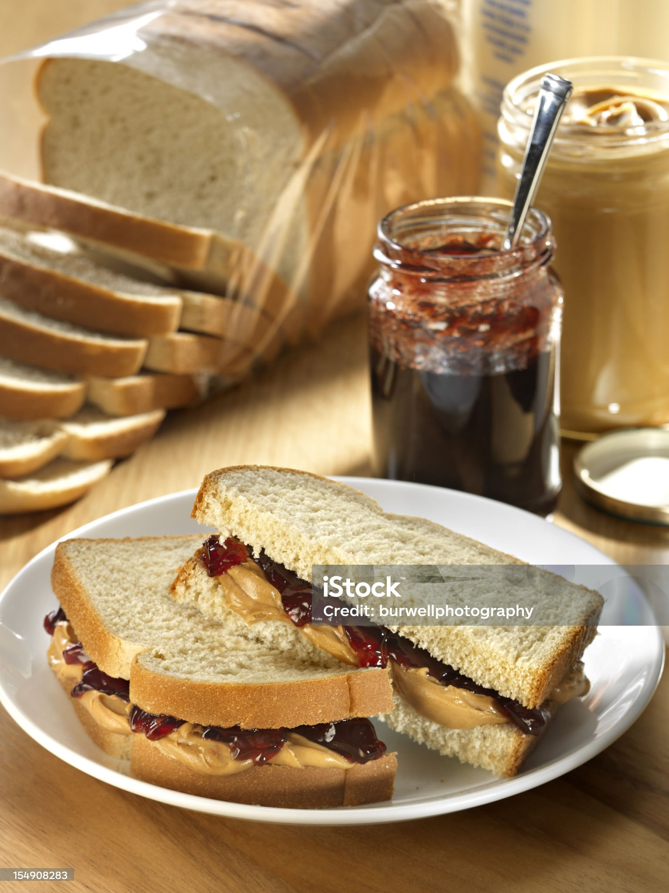

PB&J Recipe

Details
Is there anything more classic that a Peanut Butter and Jelly Sandwich? Boy this takes me back to the days of running free around the neighbourhood without a care in the world
Now my culinary skills were not that great as a kid, and maybe they still need work today. However, this is one recipe that I'm confident anyone can make effortlessly.
Ingredients
- Bread of your choice
- white
- wheat
- sourdough
- you get it...
- Peanut butter
- smooth
- chunky
- creamy
- etc...
- Jelly or Jam
- strawberry
- cherry
- raspberry
- Heck, maybe even marmalade!
Steps
- Take out two slices of Bread
- Spread the peanut butter of your choosing on one side of the bread
- Spread the Jam or Jelly of your choosing on the other side of the bread
- Press the PB side into the J side, and Voila! You have yourself a PB&J sandwich
- cutting off the crust optional
- Enjoy!